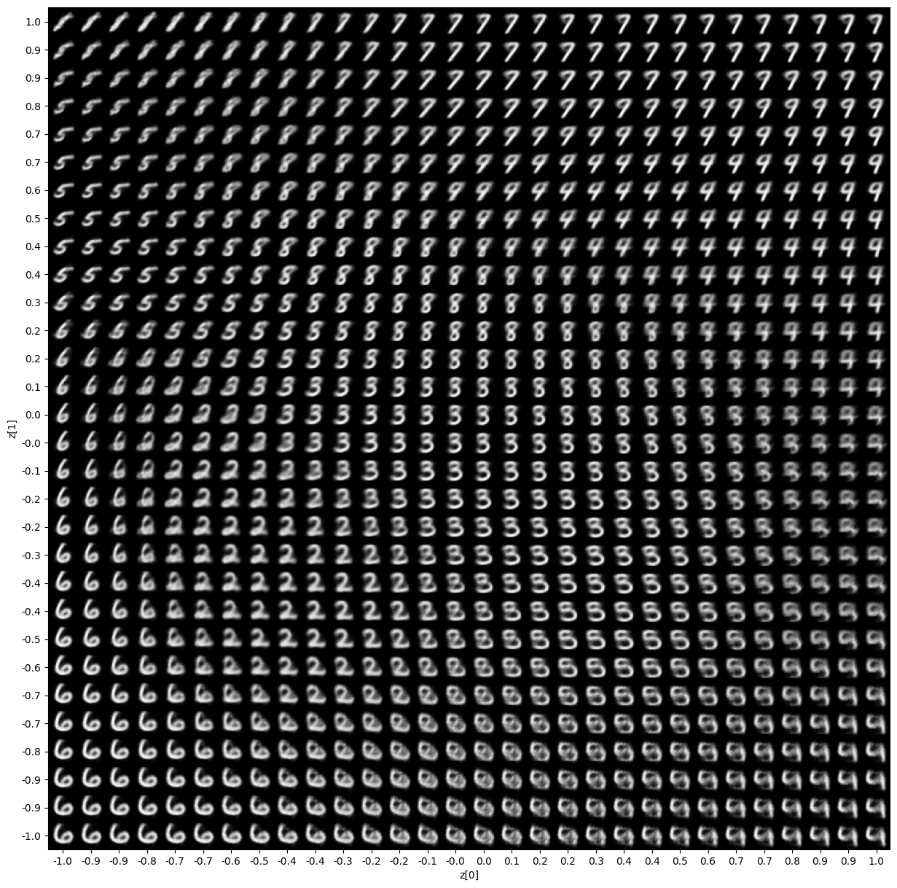

胸部 X 射线与生成模型
胸部 X 射线是骨骼、肺和心脏重叠在一起的二维投影，生成模型学习的是胸片像素分布和结构统计规律。它可用于表征学习、质量控制和受控数据增强；生成图看起来像胸片，并不表示其中的解剖或病理一定真实。
我们先理解 X 射线如何形成胸片，再认识生成模型、变分自编码器、生成对抗网络、潜在向量和生成质量评价。胸片作为医学图像例子，用来说明这些概念在不同任务中的含义。
1. X 射线与医学投影
X 射线是一种高能电磁辐射。它穿过人体时，一部分光子被吸收或散射，另一部分到达探测器。骨和高密度组织通常衰减更多，含气肺组织衰减较少，因此在图像中形成不同灰度。
胸部 X 射线检查把肺、心脏、纵隔、肋骨和膈肌等结构叠加到一张二维图像中。阅读胸片需要同时理解解剖位置、投影方向和成像质量。
X 射线是一类能量较高的电磁辐射。成像设备发出的 X 射线束穿过人体后由另一侧探测器记录光子分布。不同组织吸收和散射光子的程度不同，探测器接收到的光子数量因而形成空间差异。计算机把这些差异转换为灰度图像，得到一张投影式医学影像。
胸部 X 线片中的每个像素汇总了射线路径上多个组织的共同影响。肋骨、肺组织、心脏、血管、肌肉和空气沿同一条射线路径发生叠加。图像中的二维位置能够指示结构的大致投影位置，却没有直接给出结构位于身体前后方向的精确深度。
X 射线摄影具有采集快、设备普及、空间分辨率较高等特点，常用于胸部、骨骼、牙科和急诊检查。胸片可以显示肺野透亮度、心影大小、胸膜腔、肋骨和膈肌等结构，并可辅助观察肺炎、气胸、胸腔积液、肺水肿和骨折等异常。
CT 同样使用 X 射线，但采集方式不同。普通胸片通常从一个或少数方向记录投影；CT 围绕患者从多个角度采集投影，再通过数学算法恢复横断面。两种检查共享 X 射线衰减物理，输出数据的空间含义不同。
阅读胸片时，首先要建立正常结构的空间关系。两侧肺野主要含气，通常较暗；肋骨、锁骨和脊柱吸收较多 X 射线，通常较亮；心脏和纵隔位于中央偏左，形成软组织密度影；膈肌位于胸腔下方，右侧通常略高于左侧。肺门处包含血管和支气管等结构，纹理比外周肺野更明显。
正常图像提供结构基线，异常图像体现局部密度、边界或体积关系的改变。算法在重建图像时，需要保留这些全局结构，也需要保留肺结节、细小线状影和局部实变等小尺度信息。

2. 投影几何与结构叠加
胸片把三维胸腔压缩为二维投影，同一位置上的结构会相互叠加。肺血管经过心影或膈肌附近时，对比度会降低；位于肋骨后的病灶也可能被骨性结构部分遮挡。侧位胸片提供另一投影方向，使前后方向上重叠的结构得到重新排列。
轮廓是否清楚取决于相邻区域的衰减差异。两个密度接近的组织直接相邻时，交界线可能变得模糊。放射学中的轮廓征利用这一现象帮助判断病变位于哪个肺叶或纵隔区域。对重建模型而言，轮廓变模糊可能来自真实病变，也可能来自过度平滑，因此需要与原图逐区比较。
I₀ 表示入射强度，I 表示穿过组织后到达探测器的强度，μ 表示材料对当前能量 X 射线的线性衰减系数，x 表示穿过厚度。骨骼的有效衰减较强，空气的衰减较弱，软组织位于两者之间。实际人体包含多种组织，射线路径上的总衰减由各段组织共同决定。
射线源近似位于一个有限焦点，射线束向外发散。物体距离探测器越远，投影放大越明显；物体距离探测器越近，放大越小。胸部后前位检查中，患者胸部贴近探测器，心脏距离探测器相对较近，因此心影放大较少。前后位床旁胸片中，心脏距离探测器更远，心影更容易显得偏大。
胸片外观同时受到患者状态和采集过程影响。吸气不足会使肺容积较小、肺纹理显得更密，心影也可能相对增大。旋转会让锁骨和纵隔不对称。运动会产生边缘模糊。衣物、导管、金属和床旁设备可能在图像中形成额外影像。
算法若只在规则的后前位胸片上训练，遇到床旁前后位、低吸气、旋转或多种医疗器械时，输入分布会发生改变。重建模型可能把真实的采集差异当成需要修复的缺陷，也可能把伪影写入潜空间。
思考 后前位胸片中某个阴影与心缘重叠，为什么侧位片可能有助于定位？
3. 数字胸片与质量
评价胸片和模型重建图之前，需要先判断原始检查质量。常用的四项检查包括旋转、吸气、穿透和覆盖。旋转可通过两侧锁骨内端与脊柱的距离判断；吸气程度可结合膈肌位置和可见后肋数量判断；穿透反映纵隔后方和胸椎结构是否仍可辨认；覆盖要求肺尖、双侧肋膈角和胸壁均在图像中。
这些因素会同时改变图像外观。低吸气可使肺纹理拥挤，心影相对增大；旋转可造成纵隔和肺野不对称；穿透不足使整幅图偏白；裁剪会直接丢失解剖区域。模型如果把这些采集差异当成异常或需要修复的缺陷，输出就可能偏离真实检查。
临床 X 射线图像通常以 DICOM 格式保存。文件中既有像素矩阵，也有患者、检查、设备、体位、时间、像素间距和显示相关信息。研究数据在脱敏后仍应保留理解图像所需的技术字段，例如视图类型、图像尺寸和光度解释。
DICOM 中常见的 Photometric Interpretation 决定数值高低与显示亮暗的对应关系。某些图像使用 MONOCHROME1，较小数值显示为白；另一些使用 MONOCHROME2，较大数值显示为白。直接把像素数组当普通灰度图读取，可能造成黑白颠倒。
普通显示图像常用 8 位表示 256 个灰度等级，医学原始数据可能使用 10、12、14 或 16 位容器。位深越高，可表示的数值层级越多。训练前将高位深数据直接压缩到 8 位，需要选择合适的强度映射，否则低对比结构可能被合并。
深度学习模型通常要求固定输入尺寸。胸片原始尺寸可超过两千像素，教学实践常缩放到更小尺寸以降低计算量。缩放需要保持纵横比或明确裁剪策略。强行拉伸会改变心胸比例和结构形状，中心裁剪可能切掉肺尖或肋膈角。
胸片数据字典示例
| 字段 | 含义 | 模型前检查 |
|---|---|---|
| PatientID / StudyID | 患者与检查层级标识 | 用于患者级划分和去重 |
| ViewPosition | PA、AP 或侧位 | 判断体位分布和分层评价 |
| Rows / Columns | 图像矩阵尺寸 | 确定缩放和批处理方式 |
| BitsStored | 有效位深 | 避免错误缩放 |
| PhotometricInterpretation | 灰度显示方向 | 检查是否需要反相 |
| PixelSpacing | 像素对应的物理尺寸 | 涉及长度和面积时必须保留 |
4. 生成模型的学习对象
胸片生成任务使用一组真实胸部 X 射线图像学习图像分布。无条件生成模型的直接输入是一组随机数，输出是一张新的灰度图像；条件生成模型还可以接收类别、体位或其他信息。模型输出的含义是生成与训练分布相似的图像样本。它不等同于为某位患者恢复真实影像，也不自动具有诊断标签。
生成任务的难点来自胸片结构的整体一致性。肺野、纵隔、膈肌、肋骨和肩胛骨具有相互约束的几何关系。仅让局部纹理看起来像 X 射线并不足够，左右结构、器官边界、曝光分布和投影重叠也要保持合理。输入预处理因此需要统一方向、灰度范围和尺寸，并排除明显损坏或不属于目标体位的图像。
概念检查
生成模型学习的对象是什么？它与分类模型的输出有什么不同？
展开参考答案
生成模型学习数据中常见结构的概率规律，并据此产生新的样本。它与分类模型的区别在于，输出是一整幅图像或数据对象。
5. 生成模型的网络结构
生成对抗网络的判别器输出真实性分数，生成器则根据判别器提供的梯度不断调整图像。两个网络的目标相互依赖，任何一方明显过强都会让训练失衡。与之不同，变分自编码器使用编码器得到潜变量分布，再由解码器重建图像，训练时直接比较重建结果与输入。
卷积生成模型通常从小尺寸、多通道的特征块开始，通过上采样和卷积逐级恢复空间分辨率。编码器—解码器模型在压缩和恢复过程中保留局部结构，残差块可以让相邻层更容易传递细节。网络每层的张量尺寸、通道数和输出范围都需要与输入图像的物理含义对应。
转置卷积的步长、卷积核和 padding 决定输出尺寸，参数组合不合适时会产生棋盘格伪影。上采样后接普通卷积通常更容易控制纹理。编码器—解码器结构还需要检查压缩后的潜变量是否保留了胸片的整体轮廓与局部对比。
判别器与图像分类 CNN 类似，从图像中逐级提取局部边缘、器官轮廓和整体灰度分布。无论采用哪类生成模型，数据清理和统一预处理都属于模型设计的一部分；边框、文字标记、尺寸差异或设备风格都可能成为模型的捷径。
6. 编码器、解码器与概率潜空间
VAE 的损失通常由重建项和 KL 散度组成。重建项比较输入图像与输出图像的像素、边缘或结构差异，KL 项把潜变量分布约束到选定的先验附近。KL 权重过大可能使重建过于平滑，过小则可能让潜空间缺少规则结构。
训练过程中应保存固定验证样本的重建图，并记录重建损失、KL 损失、潜变量均值与方差以及梯度范围。数值出现 NaN 时，应检查指数运算、方差范围、学习率和输入异常值。
重参数化把随机采样写成 z=μ+σ⊙ε，其中 ε 服从标准正态分布。这样既保留了概率采样，也能让损失对 μ 和 log σ² 反向传播。解码器的最后一层激活函数应与输入图像的归一化范围一致。
VAE 的总损失也不能单独解释。重建损失下降可能伴随图像变得平滑，KL 损失下降可能表示潜变量接近先验，也可能来自后验坍塌。训练监控需要同时查看固定输入的重建、随机潜变量的生成、多样性、真实与生成灰度分布以及潜变量方差。
生成模型可能反复输出少数相似样本，也可能通过过度平滑丢失细小结构。胸片中可以表现为肺野轮廓、心影大小和纹理几乎重复，或重建结果缺少边缘。简单检查方法包括计算图像两两距离、观察潜变量插值和统计生成特征的方差。多样性高也不等于质量高，噪声图像同样具有很大差异，因此多样性需要与结构合理性一起判断。
思考 训练总损失下降，但固定验证样本的重建越来越平滑，应优先查看哪些量？
7. 潜在向量与图像变化
给定两张图像的潜均值 z₁ 和 z₂，可计算 z(t)=(1−t)z₁+t z₂，再由解码器生成中间图像。规则潜空间通常产生较平滑的变化。插值结果反映模型学到的数据流形，也可能混合两个病例中的设备、体位和病理因素。
插值过程不能被直接解释为疾病真实发展轨迹。模型只在统计空间中连接两个样本，时间顺序和因果机制没有自动包含在其中。
训练完成后，可以从 N(0,I) 采样 z 并输入解码器，生成新的图像。生成质量取决于潜空间是否与先验匹配、解码器能力和训练数据覆盖范围。
潜变量遍历固定其他维度，只改变一个潜维度并解码图像。若输出沿某一维度主要改变心影大小、肺容积或亮度，可以描述为该维度与这一变化相关。多个因素常同时变化，潜维度也可能在不同区域产生不同作用。
遍历范围应参考训练样本潜分布。把 z 推到远离训练分布的位置，解码器可能生成不稳定结构。二维可视化容易产生直观印象，高维潜空间需要结合统计分析。

8. 质量、多样性与失败模式
VAE 可以学习胸片的统计分布，形成压缩表示并生成样本。生成图像适合用于理解模型表征、方法验证和受控的数据研究。临床结论需要真实测量和专业验证。模型生成的病灶外观不能直接视为真实病例，潜变量变化也不能自动解释为生理机制。
生成模型评价至少包含真实性、多样性和任务一致性。真实性观察图像是否具有合理胸片结构；多样性观察模型是否覆盖不同体型、曝光和解剖变化；任务一致性检查条件输入是否真正改变预期内容。FID 等分布指标需要可靠的特征提取器，在医学图像中直接使用自然图像特征可能产生偏差。
可核对的评价包括固定输入重建、潜变量采样网格、生成图像两两距离、灰度直方图、结构特征差异和失败模式分类。结论限定为模型是否学到基本胸片外观、重建是否稳定以及潜空间是否具有可读变化，不把生成图像解释为可用于诊断或替代真实数据。
概念检查
生成图像的结构质量、多样性和失败模式分别应怎样观察？
展开参考答案
生成结果既要像真实图像，也要保持样本之间的多样性。只观察最好的一张图无法判断模型质量，还要检查重复模式、异常结构和训练过程。
9. 实践项目：胸片残差卷积 VAE 图像生成
网页中的示意图和结果用于阅读本节内容；实践代码、训练过程和个人结果请在 Kaggle Notebook 中完成。打开题目 Notebook 后复制到自己的账户，再按单元格填写、运行和观察输出。
- 读取 NORMAL 目录中的胸片，完成灰度化、缩放和 [-1,1] 归一化
- 补全残差块、编码器、解码器、重参数化和输出层，并核对各层 shape
- 组合重建 L1、边缘 L1 与 KL 损失，完成训练更新并记录曲线
- 使用固定留出图像检查重建，并从潜变量采样生成胸片
- 比较输入、重建、最近邻、插值和生成网格，结合图像统计阅读结果
完成后保存 Notebook 中要求的结果文件。